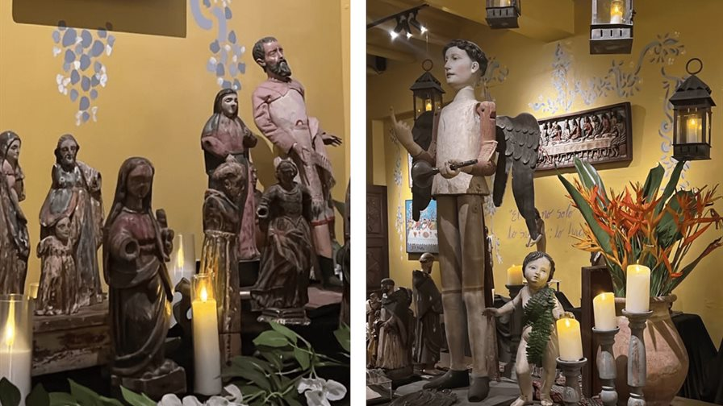

Arte, humor y tradición: planes imperdibles para este fin de semana.
16 de octubre, 2025
Este fin de semana, la ciudad se llena de opciones culturales para todos los gustos. Además de todo lo que nos ofrece la Feria Internacional del Libro de Santo Domingo, los amantes del teatro podrán reír, reflexionar y emocionarse con montajes únicos, mientras los aficionados al arte podrán sumergirse en exposiciones que combinan espiritualidad y estética. Entre las propuestas destacan la multipremiada comedia Toc Toc, que aborda con humor y sensibilidad el Trastorno Obsesivo-Compulsivo; la exposición Santos en el Jardín, que invita a recorrer el universo íntimo de Patricia Reid; y Liborio, una adaptación contemporánea que reinterpreta la figura legendaria de este mítico personaje campesino. En estas actividades, la creatividad, la tradición y la innovación se unen para ofrecer experiencias memorables, perfectas para disfrutar solos, en pareja o en familia.